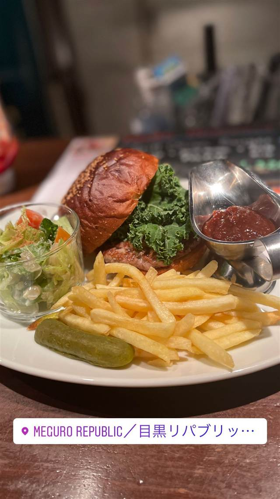

目黒リパブリック Beer&Burger
ここだけの地ビール目黒ラガーと合わせたビーフ100%バーガー
MEGURO REPUBLIC／目黒リパブリッ…
WHY GO
オリジナル地ビール目黒ラガーはここでしか飲めない看板メニュー
ここだけの一品
「目黒リパブリック Beer&Burger」は、バー運営会社ATCFが目黒駅東口すぐに開いたクラフトビール専門パブ。タップ10種・ボトル200種以上のビールに加え、ここでしか飲めないオリジナルビール『目黒ラガー』と、ビーフ100%パティのハンバーガーが名物。
TRIVIA
へえ、という話
- 店オリジナルの地ビール『目黒ラガー』はここでしか飲めない
- 店は『大統領も食べた自慢のパティ』とうたうハンバーガーを看板にしている
REVIEWS
みんなの声
3.38食べログ
「肉厚バーガーと隠れ家ビアバー」に注目
- 肉の存在感としっかりしたソースの美味しさを評価する声が多い
- 落ち着いた雰囲気でクラフトビールと合わせて楽しむ人が多い
- 地下で入り口がわかりにくいという指摘がある
- バンズがふわふわ系でカリカリ好きには物足りないという声もある
食べログ 口コミ114件
| 系譜 | バー運営・プロデュース会社ATCF Ltd.（有限会社アズザクロウフライ）が展開する同社9店舗目として開業 |
|---|---|
| 看板 | 自慢のビーフ100%パティを使ったハンバーガー、オリジナル地ビール『目黒ラガー』 |
| こだわり | タップ10種・ボトル200種以上のクラフトビールをそろえ、店だけのオリジナルビール『目黒ラガー』も提供 |
| どこから | 都心 |
| 予算 | 夜 ¥3,000～¥3,999 |
| 定休日 | 無休 |
| 場所 | 目黒駅（正面出口徒歩2分） 東京都品川区上大崎3-3-1 オバタビルB1F |
| 注意 | 目黒駅東口から徒歩2分。バータイム（18時以降）は1ドリンクオーダー制、ハッピーアワーあり |
食べたもの：ハンバーガー
NEARBY
近い店・同じ系統の店
-
 ★
二郎系(直系) 目黒駅
ラーメン二郎 目黒店
慶應大学応援部出身の店主が開いた二郎の老舗
昼 ～¥999 夜 ～¥999
★
二郎系(直系) 目黒駅
ラーメン二郎 目黒店
慶應大学応援部出身の店主が開いた二郎の老舗
昼 ～¥999 夜 ～¥999
-
 ピザ 目黒駅（東口徒歩2分）
Pizzeria&Trattoria GONZO 目黒店
専用石窯で焼く薪窯ナポリピッツァと炭火焼きの肉料理が通し営業で味わえる
夜 ¥5,000～¥5,999
ピザ 目黒駅（東口徒歩2分）
Pizzeria&Trattoria GONZO 目黒店
専用石窯で焼く薪窯ナポリピッツァと炭火焼きの肉料理が通し営業で味わえる
夜 ¥5,000～¥5,999
-
 イタリアン 目黒駅（西口）
TRUNK（トランク）
国産和牛や北海道鹿肉、80種のワインと味わうイタリアン
昼 ¥1,000～¥1,999 夜 ¥4,000～¥4,999
イタリアン 目黒駅（西口）
TRUNK（トランク）
国産和牛や北海道鹿肉、80種のワインと味わうイタリアン
昼 ¥1,000～¥1,999 夜 ¥4,000～¥4,999
-
 エスニック・各国料理 目黒駅（東口）
Cabe Meguro（チャベ目黒店）
インドネシア語で唐辛子を意味する全メニューハラール対応のナシゴレン
昼 ¥1,000～¥1,999 夜 ¥3,000～¥3,999
エスニック・各国料理 目黒駅（東口）
Cabe Meguro（チャベ目黒店）
インドネシア語で唐辛子を意味する全メニューハラール対応のナシゴレン
昼 ¥1,000～¥1,999 夜 ¥3,000～¥3,999
-
 スープカレー 目黒／恵比寿
薬膳スープカレー・シャナイア（Shania）
元ITエンジニアが脱サラ、フレンチ仕込みの薬膳スープカレー
昼 ¥1,000～¥1,999 夜 ¥2,000～¥2,999
スープカレー 目黒／恵比寿
薬膳スープカレー・シャナイア（Shania）
元ITエンジニアが脱サラ、フレンチ仕込みの薬膳スープカレー
昼 ¥1,000～¥1,999 夜 ¥2,000～¥2,999
-
 ケーキ・パフェ 目黒駅
PARLOR NOON
1階のアジア料理店シェフと共同開発したプリンとトースト
昼 ¥1,000～¥1,999 夜 ¥2,000～¥2,999
ケーキ・パフェ 目黒駅
PARLOR NOON
1階のアジア料理店シェフと共同開発したプリンとトースト
昼 ¥1,000～¥1,999 夜 ¥2,000～¥2,999